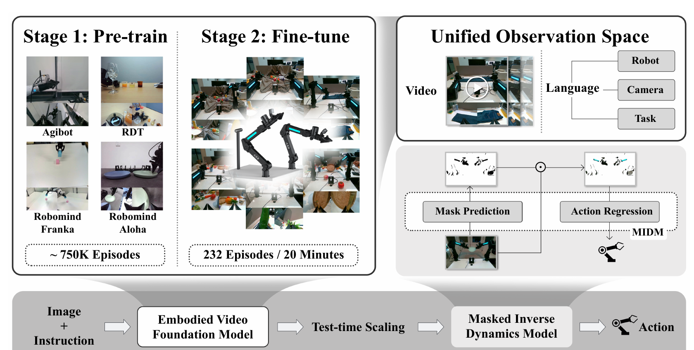

Vidar: Embodied Video Diffusion Model for Generalist Manipulation
Yao Feng 等 · arXiv:2507.12898 v4 · 2025 技术报告 · Zotero 278V74C6
Vidar 将大量多机器人视频学成共享 embodied video prior，再用约 20 分钟新本体示范微调；执行时多采样视频并重排，最后由会自动屏蔽背景的 Masked IDM 把视频翻译为目标机器人的动作。
§1 Introduction：为什么跨本体泛化不能只靠更大的端到端 VLA
把策略迁移到新机器人时，最贵的不是识别物体或理解语言，而是重新覆盖该本体的动作空间、视角、接触动力学与长尾失败。动作维度会随关节和执行器组合快速增长；直接扩充跨本体遥操作数据成本高，端到端 pixel-to-action 模型还容易把背景、相机和机器人外观当成捷径。
Vidar 的出发点是把“知道交互大致会怎样发展”和“知道这台机器人该发什么动作”分开。前者由互联网视频与多机器人视频训练的 embodied video diffusion prior 承担，后者由目标本体少量动作数据训练 masked inverse dynamics model（MIDM）承担。它追求的是one prior, many embodiments：共享可迁移的视觉动力学，再让小适配器接入各自 action space。
展开原文 · 核心主张
“one prior, many embodiments”
§2 Related Work：视频先验、本体适配与抗干扰表示
VLA 路线用统一语言—视觉骨干直接预测动作，优势是端到端，代价是跨本体动作监督规模巨大。UniPi/AVDC 等 video-as-policy 工作把未来视频放在动作之前，使无动作视频可以参与学习，但显式 rollout 会增加延迟，IDM 也可能被背景变化欺骗。Vidar 沿用级联思路，却把视频 prior 训练扩展为“互联网视频 → 75 万多视角机器人轨迹 → 目标本体少量示范”的三级数据课程。
MIDM 的位置同样重要。普通 IDM 可能依赖静态背景、机械臂纹理或相机姿态来回归动作；Vidar 让它学习 action-relevant pixel mask，只保留与运动和接触有关的区域。它与 VPP 的差别在于：VPP 读取一次视频模型前向的隐特征追求实时性，Vidar 更强调显式候选 rollout、跨本体视频先验和低样本本体接地。
§3 “One prior, many embodiments”
- $G$
- 大视频模型吸收跨机器人、跨视角的共享世界与行为先验。
- $I$
- 轻量 MIDM 负责目标本体动作坐标系与背景鲁棒性。
- 核心假设
- 不同本体的任务语义和视觉运动可在视频空间共享。
§4 预训练、少量适配、test-time scaling、MIDM

1. 学跨本体视频 prior
使用约 750K 多视角 episode 做 embodied continual pretraining。
输入是什么：相机图像或视频，加上任务指令和机器人当前状态。它们还是原始观测，模型尚未把它们变成可用于预测或控制的特征。
这一步究竟做什么：使用约 750K 多视角 episode 做 embodied continual pretraining。
输出到哪里：经过本步骤处理、含义更明确的中间结果。这个结果会交给下一步“显式编码本体和相机”继续处理。
为什么不能省略：它把未经处理的原始问题变成后续模块可以计算的输入，是整条链路的起点。
2. 显式编码本体和相机
避免模型把形态/视角差异混成任务变化。
输入是什么：来自上一步“学跨本体视频 prior”的产物：经过本步骤处理、含义更明确的中间结果。本步骤还会按论文设置读取当前条件、时间步或训练信号。
这一步究竟做什么：本步骤执行“显式编码本体和相机”。具体来说，避免模型把形态/视角差异混成任务变化。 这里处理的只是整条链路中的一个接口：把上一步的结果整理成下一步能够正确读取和继续计算的形式。
输出到哪里：一组比原始输入更紧凑的内部特征；它不是最终动作或画面。这个结果会交给下一步“少量目标域微调”继续处理。
为什么不能省略：模型不能高效地直接在所有原始像素和长序列上推理；这一步把信息压成后续模块能处理、比较和复用的形式。
3. 少量目标域微调
用约 20 分钟新机器人的人类示范对齐其外观和运动。
输入是什么：来自上一步“显式编码本体和相机”的产物：一组比原始输入更紧凑的内部特征；它不是最终动作或画面。本步骤还会按论文设置读取当前条件、时间步或训练信号。
这一步究竟做什么：本步骤执行“少量目标域微调”。具体来说，用约 20 分钟新机器人的人类示范对齐其外观和运动。 这里处理的只是整条链路中的一个接口：把上一步的结果整理成下一步能够正确读取和继续计算的形式。
输出到哪里：一套固定且可复现的输入条件，后续所有模型都必须在这套条件下生成或行动。这个结果会交给下一步“采样、重排、解动作”继续处理。
为什么不能省略：前面的数据或分数本身不会自动改变模型；必须通过损失函数把误差信号变成参数更新。
4. 采样、重排、解动作
从多个视频候选选最好者，再由 MIDM 输出控制。
输入是什么：来自上一步“少量目标域微调”的产物：一套固定且可复现的输入条件，后续所有模型都必须在这套条件下生成或行动。本步骤还会按论文设置读取当前条件、时间步或训练信号。
这一步究竟做什么：本步骤执行“采样、重排、解动作”。具体来说，从多个视频候选选最好者，再由 MIDM 输出控制。 这个动作会真正改变环境，所以系统还要读取执行后的新观测，检查模型预期与现实之间的差距。
输出到哪里：一个或多个候选未来、动作或轨迹，以及必要的中间状态。这是图中这条链路的最终产物，随后会进入真实执行、模型更新或指标评测。
为什么不能省略：它把前面得到的内部结果落实为可执行动作、可训练模型或可解释指标，完成从方法到结果的最后一步。
§5 Unified Observation Space
- $I^{(1:V)}$
- 来自 $V$ 个相机视角的图像。
- $aggregate(\cdot)$
- 把多视角视觉特征合成观测 token $o$，提供几何互补信息。
- $l_{robot},l_{camera},l_{task}$
- 机器人本体、相机配置和任务描述的条件 token，显式告诉模型数据来自哪个控制与观测系统。
- $U$
- 最终统一输入集合；跨本体泛化依赖这些上下文是否足以消除动作和视角歧义。
视频 backbone 完全不看动作，它只学习多视角世界演化；机器人、相机与任务通过语言条件说明。动作差异被推迟到目标平台的 MIDM，因此共享 prior 不必硬拼不同维度的 action space。
§6 MIDM：用稀疏掩码抑制背景捷径
- $m$
- 隐式学出手、工具、接触区域等 action-relevant 像素。
- $\|m\|_1$
- 避免全图全开，从而降低背景/纹理分布偏移。
- 仍需 action
- MIDM 的回归损失来自新本体带动作示范。
§7 证据与局限
§8 实验归因与复现：不要把数据规模当成结构创新
最小可信复现清单
- 列出每阶段视频来源、采样比例、帧率、分辨率和条件缺失处理。
- 固定目标本体示范分钟数，绘制少样本 scaling curve，而非只给一个点。
- 分别评估背景、相机视角、物体外观和机器人外观变化。
- 报告视频候选质量、MIDM 离线误差和闭环成功率三层指标。
- 用 oracle future 与 oracle action adapter 估算 prior 和 MIDM 的各自上界。
Vidar 的主要贡献不是“视频生成更好看”，而是把跨本体共享知识放进视频 prior，把机器人差异压缩到少量数据可训练的 MIDM。